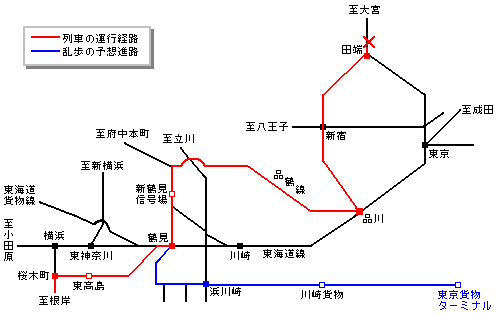
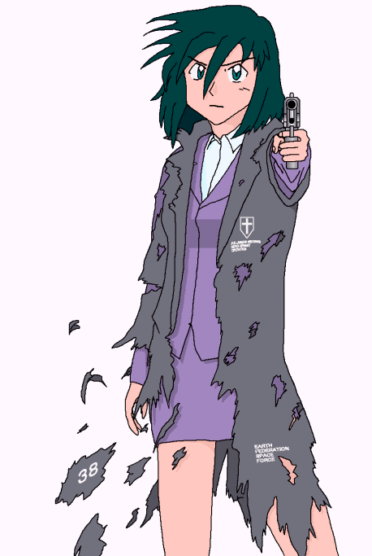

Gentlegirl
作：ＴＲＡＣＥ
＊あらかじめ断っておきますが、今回はとってもマニアックなトリックとなっております。あらすじと登場人物紹介はちょっと書きにくい展開なので第３話にお任せです。まあ今回は第３話と韻を踏んでいる点も多いので、ついでにお読みいただければ幸いかと。
４．最後の咆哮
道路にうっすらと積もった雪を踏みしめながら、真貴子はひとり通学路を歩いていた。足元でギュッギュッと音がして雪が踏まれる。だがそんな愉快な音も、彼女の心を晴らしてはくれない。
「わたしの事なんか、何も知らないくせに！！」
昨日はどうしてあんな態度を取ってしまったのだろう？彼女が傷つくであろう事ぐらい、わかっていたのに。兄の事で動揺していたからだろうか。
それに、香織ちゃんがわたしの事を何も知らない訳がない。だって彼女は——。
そこまで考えて、真貴子は悲しげに首を振る。かき消したかった。再び自分の脳裏に現れた、一人の青年の後ろ姿を。
なぜなの？どうしてわたしはそこまで、アイツにこだわろうとするの？
真貴子は未だに気が付いていない。いや、気付かないフリをしているだけなのだ。いつのまにか秋野薫が、自分の胸の中であまりに大きな存在となっていたことを。
もう忘れよう、アイツの事は。いつまでも未練がましくアイツの事にこだわるのはやめよう。だって、アイツはもう、逝ってしまったんだもの……。
そう自分に言い聞かせていると、自分の歩く先に茶色がかった髪が見えた。どこかで見覚えはあるが、目の前の少女はストレートヘアーだ。
いや、人違いではなかった。
「乃恵美ちゃん……」
「マキ姉……」
珍しく髪をストレートに下ろしたままの乃恵美は憂鬱な表情をしていた。その分、どこか大人っぽくも見える。
「香織ちゃんは？」
「……」
乃恵美には答えようがなかった。今朝は香織と何の会話も交わしていない。会話を交わせるような空気ではなかった。香織だけではない。自分の父親・マスターも香織同様、昨夜からとてつもなく沈んでいた。
自分が居眠りしている間に、何があったのか？それこそ訊けない事だ。
疎外されている。乃恵美はそう感じずにはいられなかった。
「そう……」
乃恵美の沈黙を否定の意味に取ったのか、真貴子も口をつぐんだ。
時刻は8時ちょうど。真貴子の兄、江戸川乱歩が要求した現金輸送列車が発車する、ほぼ１時間前の事である。
8時52分。
横浜の湾岸地帯本牧埠頭にある根岸駅から、乱歩が80億円輸送用に指定していた貨物列車が発車した。現金の搬入は昨夜のうちに済んでいる。もちろん、列車の動きはリアルタイムで監視済みだ。
「定刻通り、根岸駅を出発」
鉄道会社・日本鉄道（ＮＲ）貨物株式会社（日鉄貨物）の管制室に、警視庁対策本部の数名が詰めていた。刑事部長、芝浦警部、倉主刑事の三人。
「警部、高橋くんはまだ来ないんですか？」
「雪に足を取られてすっ転んで、ねんざして病院行きだとさ」
「Gee, rubbish（ふ〜ん、使えないヤツ……）」
「へ、へっくしょんッ！ッ、あいてててててててて！！」
その頃高橋は治療の真っ最中だった。
しかし転んだだけでねんざとは、そんな軟弱でよく捜査課にいられるものである。
「なんで今日に限って……」
管制室に話を戻す。
「同列車は根岸線桜木町駅から高島貨物専用線を通り、東高島駅9時28分着。9時48分に同駅を出発し、鶴見駅を経由して新鶴見信号場9時55分着。9時58分に同駅を発車した後は武蔵野南貨物船に入線し、府中本町までの貨物線を利用します」
担当者の説明とともに、貨物列車の運行経路が管制室のスクリーンに表示される。列車の現在位置を示す光点は根岸線を少しずつ北進している。
警官を配備するポイントは、根岸線と高島貨物線が分岐する桜木町駅構内、高島貨物線内の東高島貨物駅、そして新鶴見信号場。何らかの形で乱歩が列車を襲撃するとすれば、この３地点が絶好の位置取りとなるはずだ。
「ですが、各主要道路の爆弾調査にも人員を割かれているため、若干警備が甘い感は否めません。手薄なところを抜けられる可能性はあります」
倉主が冷静に指摘する。部長もうなずいた。
「わかっている。万が一の為に機動隊が待機中だ。奴らの目的は現金強奪。この前のようなドンパチは出来まい」
そして、付け加えた。
「これ以上、奴の好きにはさせんぞ」
同時刻。桜木町駅付近の首都高横羽線・みなとみらいインターチェンジ。
横羽線は多摩川を渡る橋が乱歩の手によって爆破されたため、実質的に通行止めとなり、他の地点にも爆弾が仕掛けられている可能性は高いと考えられていた。よって、道路脇を警官が巡回していても何の不思議にも思われなかった。
ただ変わった点があるとすれば、道路脇に止めてあるミニパトの車内に何故か下着姿の男たちが３人転がっている事である。道路脇を歩いていた３人の警官たちはそのミニパトに乗り込んだ。
数分後にパトカーから出てきたのは巨漢・チビ・そして白い背広姿の男だった。
「やっぱりサツの目は節穴ですぜ。駅周辺の警備を固めているつもりで、この辺だけノーマーク。この道のすぐ脇が線路だってのにな」
周囲を見回したチビが満足げにつぶやく。
いま彼らがいるのは地上部分の高速道路。そのため、駅周辺に配置された警官たちの担当ではなかったのである。彼らが変装用に捕まえたミニパトは爆弾調査にあたっていた警官たちで、この周辺の高速道路を調べていた唯一の警官たちだった。
「無駄口をたたくな。そろそろだぞ」
乱歩は左腕の時計に目をやる。時刻は9時ちょうど。
「行こうか」
３人はトランク片手に線路内へと足を踏み入れた。この周辺はフェンスと呼べるようなものが無く、その気になれば簡単に構内へ侵入できる。
目的の貨物列車はヘッドライトを煌々と照らして迫ってきた。ポイントの通過中、しかも雪の影響でいつもに増して徐行運転、３人が列車に飛び乗るのは呆気ないほど簡単だった。
既に乱歩たちが乗っていることなどつゆ知らず、貨物列車は警笛を鳴らして地下トンネル内へと潜っていった。
9時53分。
現金80億円を積んだ貨物列車は特にトラブルも無く、定刻通りの運行を続けていた。まもなく、新鶴見信号場に入線する時刻である。
「彼は——乱歩はまだ現れないようですな」
芝浦は内心ホッとしてつぶやく。
「我々の警備網に恐れをなしたのかもな。だが、油断はできん」
部長が自慢げにつぶやいたその矢先、
「9013から入電！『品鶴線及び山手貨物線内への入線を要求する』との事」
「むっ！？」
運転士から直々に運行経路の変更を要求してくることなど極めて異例だ。しかも乱歩の要求は「定刻通り運行せよ」だったはずだ。となると、考えられるのは……
「乱歩はいつの間にか列車に乗り込んでいたのね。つまり先程の通信は、乱歩が運転士を介して伝えてきた次の要求……。でも、品鶴線って？」
聞きなれない線路名だった。倉主の疑問には担当者が答える。
「横須賀線品川〜鶴見間の正式名称です。今では通勤路線である横須賀線も、かつては貨物線として利用されていたのです」
「だが、一体乱歩はどこへ向かうつもりだ？」
部長が唸り声を漏らす。
乱歩が自らダイヤを乱したとすれば、ここから先は貨物列車がどのような経路をとるのか全くわからないのだ。待ち伏せ戦法は使えない。しかし、鉄道は車とは違い、好きな場所に自由自在に行けるものではない。管制室のポイント操作を通じて、初めて目的地まで行けるのだ。それに他の列車との兼ね合いもある。ハイジャックしても至極使い勝手が悪いのである。
「山手線か……」
部長の目がスクリーンの一点に釘付けになっている。周回する山手線の一番北に位置する、一つの駅に。
田端駅——山手線と山手貨物線が合流する地点である。貨物列車を待ち伏せるには絶好の地点だ。しかも田端駅に列車が侵入するまでまだ最低でも１時間はある。
「例の貨物を田端で足止めする。機動隊、緊急配備だ！」
部長の命令を受けて対策本部に電話を入れる芝浦を尻目に、倉主はちらりと時計を見た。
「9時58分か……」
同時刻。貨物列車を牽引するＥＦ65貨物型電気機関車の車内。
倉主が察した通り、運転室には確かに乱歩の姿があった。少し遠くからでも乱歩の白い背広が運転室の窓越しにうかがえる。
運転士は凶悪犯と呼ばれる男と居合わせている事に怯えながらも、運転業務を続けていた。巨漢とチビは運転室内にはいない。後方の貨車で待機しているのだろう。
乱歩は運転士を脅そうとはせず、むしろ紳士的な態度で運転士に接していた。
「このまま運行を続けてくれ。あと、もし列車が止められるような事があったら、すぐに列車から離れて逃げることだ。5分後に爆発する」
運転士にそう告げると、乱歩は運転室を後にして後方の通路へ歩いて行った。
機械の塊とも言える機関車の壁を見つめながら、乱歩は以前に目を通した新聞の内容を思い出していた。
そう、あれは警備員の姿を借りて各地の道路に“ダミー”の爆弾を設置がてら、ふと目を通した時だったか。
「秋野薫君（16）先日死亡」
その記事の内容はそれ以上でも、それ以下でもなかった。
——秋野薫は死んだのか。そんな見え透いたウソを公言してまで、死んだままでいるつもりか。勇壮な紳士たる高校生よ、早くわたしを止めてみろ。君が本当に、真貴子を大事にしているのならば。
心の中でつぶやくと、乱歩は機関車後部の運転室へと足を運んでいった。そして、再び運転室に姿を現す事はなかった。
10時35分。本若菜学園では二時限目が終わって休憩時間になった。
ふと真貴子は香織の机に目を向ける。
香織はちゃんと遅刻せずに登校していた。しかし、ずっとぼんやりしたまま視線を宙に泳がせている。時折工藤が他愛の無い話をぶちまけに来てはいるが、香織はそれとなく微笑んでふらりとどこかに行ってしまうのだ。
やっぱり彼女に謝りたい。
それが真貴子の本心だった。だが“何か”がそれを押しとどめている。それが何なのかは真貴子自身も薄々察しがついていた。
……馬鹿。また何を考えているの、わたしは……。
自分の気持ちを紛らわすように携帯電話をいじってみる。
と、携帯にメールが入っていた。着信時間は10時8分。送り主は倉主刑事。メールの内容はいたって簡潔で「Please call me」それくらいの内容だった。
「どうして倉主刑事が……？」
「アイツ」繋がりで、また同じ女同士ということもあって、倉主と真貴子は比較的面識がある。だが、今ごろ何の用なのだろうか？
真貴子は不審に思いつつも、メールに記された倉主の携帯番号にかけてみた。
［ピピピピピピ］
管制室に電子音が響きわたる。いまどきにしては珍しく着メロもへったくれもない単なる呼び出し音だ。
「Excuse me」
周囲の空気を考慮したのか、倉主は管制室を出ていった。
「どうしたんだ、倉主くんは？」
倉主は廊下に出て、通話ボタンを入れた。
「Hello？真貴子さんね？」
スピーカーの向こうからは確かに真貴子の声が返ってきた。
『倉主刑事、わたしに何の用ですか？』
「Yes，でもあなたにもだけど、ちょっとある人物に人探しを依頼したいのよ。NY市警での研修でも巡り会えなかったsmartで礼節を知るLadyに——そうね、ここは差し詰め“Gentlegirl”とでもお呼びしましょうかしら」
管制室のスクリーン上の交点はいよいよ田端駅へ到達しようとしていた。機動隊の待ち伏せ地点は田端駅からやや北。既にポイントは操作済みだ。
「真一くん……」
「どうしたのかね、芝浦警部」
「は……いえ、何でもありません。ただ……」
そこで芝浦は急遽言葉を取り繕った。
「ただ、もうすぐ線路の分岐点だというのに、彼——乱歩が何の要求もしてこないのが気になりまして」
「確かに妙だな。ま、してもどの道無駄だがな」
部長は至って自信満々だった。
一方、現場は程良い緊張感に満ちていた。S.A.T.は破れたものの、今度は人数を大量動員した機動隊での包囲作戦だ。
「しかし、ATS作動用になんでＥＦ55なんて使うかなぁ？」
機動隊員の一人が緊張をほぐすつもりか、モダンな流線型の電気機関車の茶色い車体をポンポン叩いていた。このＥＦ55は日鉄東日本のイベント用機関車の一つだ。
「仕方ないだろ。使えるのがコレしか残ってなかったんだから」
「おいおい、もう時間が無いぞ」
その合図を聞くまでもなく既に全員が所定の配置に戻っていた。後は時を待って列車を包囲するのみである。
目的の貨物列車は機動隊の待ち伏せなど知らずに構内へと滑り込んでくる。
と、機関車が急ブレーキをかけた。貨物列車の先に止まっていたＥＦ55にATS（自動列車停止装置）が作動して急ブレーキを強制的にかけたのだ。貨物列車のスピードは見た目にもわかるほど急激に落ちていき——すぐに止まった。
いよいよだ。隊員たちの間に緊張が走る。
運転室のドアが乱暴に開け放たれる。乱歩が降りてくるのか。それを察した隊員たちは身構えたが——運転室から転げ落ちてきたのは白い背広姿ではなかった。紺色の上下に身を固めた、普通の運転士である。
その運転士は血相を変えて、機関車には目もくれずに駆け出してきた。人質にされる前に逃げ出すことに成功した、という事だろうか。保護すべく数人の隊員が駆け寄る。
「大丈夫ですか！怪我はありませんか？」
だが、そんな隊員の気遣いを無視して、運転士は興奮が収まらないのか隊員を振り払った。
「逃げるんだよ、早く！」
「ち、ちょっと！？どこに行くんですか！？」
引き止めようとする隊員たちにも構わず、運転士はどこへともなく全速力で走り去ってしまった。
今この場で起こった事態を全く理解できず、呆気に取られる隊員たち。
そして、5分後。
管制室内の電話が音を立てた。
受話器を掴み取った部長はすぐに相手の正体を悟った。どうやら警視庁を介してここにかけてきたのだろう。
「もう貴様のハッタリには動じんぞ。観念してすぐに列車から出ろ！」
しかし電話の主は全く動じず、受話器の向こうでフンと冷笑した。
そして、穏やかに、しかしはっきりと告げた。
『君たちの負けだ』
「何だと？」
刹那、管制室の通信機から大音響が響き渡った。だが音割れでその大音響の正体がわからない。すぐに芝浦がマイクに歩み寄って通信を試みる。
「どうした！何が起こっている！？」
通信機からはなおも大音量が断続的に流れてくる。やがて狼狽したような隊員の声が返ってきた。
『……れ、列車が、爆発しました……』
「何ぃッ！？」
つまり、通信機から流れてきた音は列車の爆発する音だったのである。しかも、その大音響からしてかなりの大爆発に違いない。
「まさか……自爆！？」
部長はアゴが外れんばかりに驚愕して受話器を取り落としていた。もっとも、既に通話は途絶えていたが。
「い、いや、そんな訳がない！すぐ周辺に検問を張れ！！他の事は全て後回しだ、その辺にいる警官を総動員しろ！大至急だ！！」
まだ動揺が収まらないまま命令を発する部長。だが、あまりに予想外の事態に誰も復唱しようとはしなかった。芝浦はもちろん、異変を察して携帯を繋いだまま室内に戻ってきた倉主さえも——。
［ピッ］
真貴子は携帯電話を切った。
つい先程から倉主と通話していた真貴子は田端周辺での一連の騒動をリアルタイムで知ることになった。加えて倉主も包み隠さずに伝えてくれたので、田端周辺で何が起こったのか知ることが出来た。
乱歩が同乗した現金輸送貨物列車が、列車もろとも大爆発。
事ここまでと現金80億円と運命を共にしたのか。いや、彼がそんな簡単に諦めるはずがない。真貴子はそう感じていた。乱歩は、兄は既にどこかへ逃げたのだ。爆発のどさくさに紛れ、何らかの手段で現金を奪って。
だが、この話を彼女に伝えるべきだろうか。
いや、そんな事を悩んでいる時点で自分はどうかしているのだろう。そもそも倉主刑事が直々に頼んできたのだ。伝えるべきに決まっている。
……そうよね、伝えた方がいいに決まってるわね。そしてその時、ちゃんと謝ろう。昨日はあんな事言ってごめんなさい、って。
どうしてそんな簡単過ぎることが出来ないんだろう？
答えを出すのはやめた。答えを出そうとしたら、また昨日みたいに彼女に冷たくあたってしまうかもしれない。最近の自分はやけに癇が高ぶっているのだ。
真貴子は廊下の壁にもたれたまま、小さなため息を漏らす。
「マキさん……」
自分を呼ぶ声に、真貴子は顔を上げた。
「香織ちゃん……」
丁度いい。今こそ彼女に謝るときだ。
だが、先に口を開いたのは香織の方だった。
「昨日はごめんなさい」
「え？」
思わず怪訝な顔をする真貴子。どうして彼女は自分に謝るのか？謝るべきは自分の方なのに。
「どうしたの、香織ちゃん……」
「……いえ、昨日は出過ぎたことを言ってしまって、薫くんでもないのに、分かったような事を言ってしまって……。でもマキさん、これ以上お兄さんの事で思い詰めるのはやめて。ワタシまで……悲しくなるから……」
思い詰めているのはアナタの方じゃないの？わたしは思い詰めてなんかいない。それに、どうしてアナタまで悲しまなきゃいけないの？
真貴子はその本心を言おうと口を開いた。
「……アイツなら、そう言うって？」
自分で言ったその台詞に、そして敵意を剥き出しにしたような口調に己の耳を疑った。こんな事を言おうとした訳がないのに、口が勝手に動いていたのだ。
「マキさん……？」
「アイツの話はやめて！アイツの事は忘れるって決めたんだから。もう忘れさせて、アイツの事は……」
またも口が勝手に声を荒げさせていた。真貴子は香織に背を向ける。何故かは分からないが、これ以上香織を見たくなかったのだ。
「お願い……今はひとりにして……」
真貴子は香織に背を向けたまま逃げるようにその場を立ち去った。
階段の誰もいない踊り場までなんとなく歩いたところで、真貴子はふと立ち止まる。拳を壁に叩きつけていた。
「馬鹿……馬鹿馬鹿馬鹿……！どうしてあんな事を言っちゃうのよ……」
真貴子は唇を噛み締めた。せっかく彼女に謝る機会が出来たのに、余計に彼女に冷たくあたってしまった。こんな自分がもう嫌だった。
そして考えた。
いつから自分はこんな屈折した人間になってしまったのか？
薫がいなくなってからだろうか。いや違う。あの時はそもそも自分は“人間”ですらなかった。では、香織と出会ったあの時からだろうか。それも違うだろう。むしろ彼女のおかげで、自分は元の自分に戻れたのだ。
兄さんだ……真一兄さんが来てから、わたしはおかしくなってしまったんだ……。
なら、やる事は一つしかない。それで彼女への償いになるわけではない。しかし、ケジメは今度こそハッキリ着けなければ。
真貴子の瞳に再び邪まな光が灯った。
その頃、国道１号線のとある場所に、数人の作業員が取り付いていた。
爆弾処理班。彼らは乱歩によって各地の主要道路に仕掛けられた爆弾のうち、この国道１号線に仕掛けられたものを調査していた。「下手に解体すれば23区民が危険にさらされる」という脅しがあったものの、だからといって爆弾を放っておく訳にもいかないのである。
爆弾の解体は特に問題なく進んでいた。起爆装置に通じるコードをたどって、慎重に切断していく。手順を一つでも間違えれば起爆する危険性がある。幸い電気回路そのものはこの手の爆弾に一般的なものだったので、解体そのものは比較的容易だった。
だが、あと一歩のところで行き詰まった。
「赤か、黒か……」
起爆装置に繋がったコードが２本残っている。ブービートラップ。これもこの手の爆弾に一般的なもので、爆弾解体を阻止する為によく爆弾犯が仕込むものだ。一方は起爆装置に通じるもので、これを切断すれば爆弾は無力化する。だがもう一方はコードそのものが起爆装置の役割を果たしていて、切断した途端にドカン、である。どちらのコードも起爆装置から伸びており、どちらを切断すればいいのかの判別は極めて難しい。ちなみに両方とも切断するのは論外である。
ペンチを握る班員の手がプルプル震える。
［ブッ！］
緊張の糸を断ち切る間抜けな音。
踏ん張り過ぎて、班員の一人がガスを出してしまったらしい。
「こんな時に何だお前は！臭せぇ！！」
「ばっ、馬鹿、ペンチが！」
「……あ！！」
もう遅い。
怒鳴った拍子につい手に力が入って、「両方の」コードを切断してしまったのだ。
「うわああああああああっ！？」
班員たちは慌てふためいて我先にとバンの陰に隠れた。
［……］
だが、いつまでたっても爆発しない。
「おい、お前。屁っこいだバツだ、調べて来い」
「ま、マジ！？」
「班長の命令は絶対だ！」
「へいへい。こんな時だけ班長気取り……」
班員は及び腰で解体中の爆弾を覗いてみた。たしかにコードは見事に全て切断されている。なら、なぜ爆発しないのか？
そこで、彼は重大な事に気付いた。
「……まさか！？」
「……爆薬が入ってない！？」
爆弾処理班からの連絡を受けた部長はまたアゴの骨が外れそうになった。
『はい。間違いありません』
「どういう事だ……入れ忘れか？」
部長のつぶやきを受けて、倉主がはたと思い当たった。
「！！警部、横浜で盗まれた爆薬はどれくらいの量でしたか？」
「ん？聞いた話ではせいぜい……」
そこまで口に出したところで、芝浦も思い当たった。
「……全然足りん！各地の道路に爆弾を仕掛けるには！！」
「今回の列車爆破、そして以前の多摩川界隈の道路爆破。横浜から盗まれた爆薬の量では、それが限界ではないでしょうか？」
「では、道路の爆弾は全て、ニセモノ……」
つまり自分たちは、乱歩が仕掛けたニセモノの爆弾にびくついて、これまで彼の要求に屈していたことになるのである。多摩川道路爆破の再来を恐れたばかりに、見事に彼の手の平で踊らされていたのだ。
「乱歩だ……まさに、江戸川乱歩だ……！」
部長は完全に蒼白した。
「……まだだ、何としても奴を捕まえる！我々警視庁は、絶対に勝つのだ！！」
部長はヒステリックに叫んでいた。
お昼前の喫茶ワトソン。
さすがに土曜日の午前中だけあって、客層は極めてまばらだ。マスターと親しいその筋の人たちを除けば、であるが。
一人の中年男性が店内に飾ってある大きめのフォトスタンドを眺めている。スタンドの中では、メイド服のようなウエイトレス服に身を包んだポニーテールの少女、つまり喫茶ワトソンの看板娘がニッコリ微笑んでいる。
「……似てきたな」
男は昔を懐かしむような口調でつぶやいた。
「ああ。今朝は特にびっくりしたよ。髪をストレートに下ろしたままで、まるで小百合の生まれ変わりのような気がしてな」
「政財界でもカタブツと呼ばれたあのドンの一人娘を射止め、見事にかっさらった普通のおぼっちゃん、それがお前さんだったな。乃恵美ちゃん、その頃の小百合さんによく似てきたよ。もっとも小百合さんが亡くなってから、当の頑固オヤジはすっかりボケちまったがな」
「昔の話はよせ。あの頃の自分は今思うと恥じいから」
カップにコーヒーを注ぎつつ、苦笑するマスター。男は今度はスタンドの中のもう一人の少女を指差してマスターに尋ねた。
「ところで、この隣のかわいい女の子は誰だ？」
かわいい女の子。乃恵美の隣に立つショートヘアーの彼女もまた、乃恵美と同じウエイトレス服を身につけている。恥じらっているのか、顔を少々赤らめているが。
「え？あ……ああ、彼女は……」
さらに苦笑し、そして今度はため息を漏らすマスター。気持ちを切り替えようと手を動かしていると、何かがカウンターの片隅に置き去りにされている事に気付いた。
「ん？これは……」
それは拳銃のホルスターだった。普段は防犯用にレジの近くに隠してある小型拳銃のものである。だが、肝心の中身がない。
マスターは一つの可能性に思い当たった。
「……まさか！？」
「マスター？」
「……いや、まさかな」
すぐにマスターは自分の考えを否定した。
ちょうど窓の外では雪がちらつき始めていた。
お昼どき。
昨日と同じように、東京の空にまた小雪が舞い始めた。この空の下では様々な人々がそれぞれの想いを胸に秘めて、落ちてくる雪を見上げているのだろう。
そして、校舎の屋上で細雪の舞う空を虚ろげな目で眺める少女がひとり。
今日は土曜日。公立校は休みだが、私立である本若菜学園は土曜日も登校だ。それでも４時間授業、各々の生徒は既に帰りはじめている。そうでなくてもこんな雪振る寒い日に屋上に出ようとは普通考えないだろう。
この少女の心理状態はもはや“普通”ではなくなっているのだ。
その屋上へと続く階段を登っていくこれまた珍しげな少女がひとり。首もとのマフラーを巻き直しつつ、階段を登るのにあわせて茶色がかったロングヘアーをなびかせている。
「……なんか渋っぽい。どこがマイルドかなぁ？」
缶コーヒーに喫茶の看板娘らしい批評をひとりごちるのは乃恵美である。
乃恵美自身もこんな日に屋上に人がいるとは思えなかったが、それでも屋上に「誰か」がいるような気がした。案の定、屋上の手摺りに持たれかかっている少女の小さな背中が見えた。見慣れた背中のはずなのに、いつもにも増して小さく、そして頼りなく見える。
なぜ彼は昨日からこんなに落ち込んでいるのか、それを訊けるような空気ではない。今の自分に出来ることといえば、精一杯明るく振る舞って彼を元気付けてあげる、ただそれだけ。落ち込んでいた理由を訊くのは、それからでもいいだろう。
「薫くんもここが好きねぇ」
いつも通りの反応を期待して、からかうように話し掛ける。
香織は何も答えない。乃恵美の方に振り返ろうともしない。
「薫くん？」
「忘れたい……秋野薫を忘れたい……忘れられない……」
香織はうわ言のようにぽつぽつとつぶやいていた。
「薫くん……」
変だ。あまりに変だ。乃恵美は回りこんで香織の顔色をうかがった。そこにあったのは「薫」ではなかった。増してや「香織」でもなかった。己を見失った一人の少女だけがそこにあった。
少女は大きくため息をつき、小さな背中をさらに小さく丸めた。
「……そうね。こんなにくよくよしてるワタシだから、マキに嫌われて仕方ないよね。秋野香織として生きていく決心をしたつもりで、全然中途半端だった。秋野薫を捨て去る事もできなかったし、増して秋野香織になりきれている訳がなかった。そんな簡単な事にも気付かず、今まで何をふぬけていたんだ、ボクは……」
不意に言葉が途切れた。少女は自嘲気味にフッと笑う。
「……しゃべりすぎだな。ワタシの悪いクセだ。……もう疲れたよ。秋野薫を忘れようとするのも、秋野香織でいようとするのも……」
香織はさらに弱々しく息を吐き出した。
［カチリ］
その手元で音がした。
乃恵美はその音の正体を一瞬で悟った。ＦＮブローニングベビー。喫茶ワトソンで防犯用に置いてある、全長せいぜい10センチほどの小型拳銃だ。
ＦＮベビーを握る右手がゆっくりとせり上がり、銃口を己のこめかみに密着させる。
「……じょ、冗談でしょ？からかってるだけでしょ？そうでしょ？」
乃恵美の言葉は疑問でも確認でもない。懇願だ。
そんな懇願もむなしく、香織はかすかに首を横に振る。
「マスターに伝えてほしい。こんなオンナの身体になってしまったワタシだけど、決してマスターを恨んでいない、って。むしろワタシの命を救ってくれた事に心から感謝している、って。元はと言えば、全てはワタシの甘さのせいなのだから……。そしてみんなにも、マキにも伝えてほしい。今までだまし続けていて、本当にごめんなさい、って……」
引き金にかけた指に力がこもる。
「薫くん、ダメッ！」
「……さよならだ、乃恵美。そしてさよなら、マキ……！」
銃声が静寂の空を貫いた。
銃口から白煙をたなびかせたまま、雪の上に転がる小型拳銃。
だが、銃弾は香織の頭を貫いていなかった。
その代わり、香織の頬を乃恵美の拳が襲っていた。ビンタでも寸止めでもない。正真正銘の鉄拳制裁だ。手加減も何もないあまりに本気で強烈な鉄拳に銃口は狙いをそれ、香織は勢いそのままに床に叩きつけられた。
「どうして！？どうしてそこまで弱気なの！？アナタは秋野薫でしょ？16年間、秋野薫として生きているんでしょ！？」
乃恵美の声は怒りに震えていた。乃恵美は倒れた香織の胸倉を掴み上げて強引に起こし、さらに凄まじい剣幕で怒鳴り散らす。
「立てアキノ！あたしの知ってる薫くんは、そんなに弱気な男じゃないはずだ！！」
激情を込めた目で睨みつける乃恵美。
香織にはそんな乃恵美のまなざしは受け入れられない。
「……放っておいて。それに、今のワタシは男じゃない……」
「よそ見するなぁ！！」
さらにもう一発、鉄拳が放たれた。香織は再び床に叩きつけられる。唇が切れて血がにじんだ。
「あたしの知ってるアナタは……」
うっすらと積もっていた雪に、ポトリと何かが落ちた。
「あたしの知ってるアナタは、あたしの大切なアナタだから……」
乃恵美の涙だった。
彼女の落とした涙が、積もった雪を少しずつ溶かしている。
「言ったでしょ、大事にしてあげなきゃダメだぞ、って。マキ姉も……マキ姉も泣いちゃうよ、このままじゃ……」
「……」
香織は立ちあがるのも忘れて呆然と乃恵美を見つめることしか出来なかった。今、乃恵美は自分のために泣いている。「妹」としてではなく一人の「女」として、「男」の自分のために泣いている。
「……」
なぜ今まで気付かなかったのだろう。そこまで自分のことを想っていてくれた「女」が、こんなにも身近にいたなんて。自分はあまりに鈍すぎる。何が頭脳明晰だ。何が迷宮無しだ。身近にいる人の気持ちでさえ、これっぽっちも分かってなかったじゃないか。
「……」
香織は今までの自分の愚かさを心から恥じた。恥じても恥じても恥じきれない。そして、ボロボロ涙をこぼす乃恵美の肩にそっと手を掛けてやった。
「……そうだよな。大事にしてあげなくちゃな、最後の最後くらい……」
大粒の涙をぬぐおうともせず、ハッと顔を上げる乃恵美。香織の口調が先程までの弱々しいものではなかった。「薫」の口調とも微妙に違うが、少なくとも自分を見失った少女の口調ではない。
乃恵美は両手でそっと香織の左手首を包んだ。
「……だったら、大事にしてあげてよ、マキ姉を。絶対に……絶対に泣かせちゃダメだよ……」
「……うん、わかったよ。ワタシは、もう誰も泣かせたくない。泣かせはしない。泣かせるものか……！だから、ワタシは……」
香織はかぶりを振る。ショートの髪に被さっていた雪が振り払われた。
「……いや！オレは……行くッ！！」
ためらうことなく「薫」は駆け出していった。一度は逃げ出した己の運命を、今再びこの胸に享受するため。
床には小型拳銃が置き去られていた。
「もう泣かせちゃダメだよ……」
駆け去っていく香織の後ろ姿を見送り、乃恵美はまた泣き始めた。
「マスター！メシ、メシ！！」
喫茶ワトソンに駆けこんだ香織は開口一番、野暮ったく怒鳴っていた。何事も腹ごしらえが先決というその意気込みは分かるが、その野暮ったさはカウンター席でちびちびビールを飲む一人の女性のものと実によく似ていた。
「あれ？なんで姉キが？」
「アンタ……」
「お前さん……」
戸惑っているのはマスターと美紀の方だ。店内に唐突に入ってきたのは今朝までの香織ではない。間違い無く「薫」の意思にあふれた香織がそこにいたのだ。
「フッ……どうやらアタシはがらにもない事心配してたみたいだな。一人酒なんて、アホらし」
美紀はカウンターの奥に手を伸ばした。そこには丁度お湯を入れたばかりのカップ麺が置いてある。
「ホレ、腹ごしらえしな」
「あ、それワシの昼飯……」
マスターのボヤキを聞き流し、３分の待ち時間も惜しいのか受話器を取る香織。
そんな荒唐無稽な香織にマスターはためらいがちに話を切り出した。
「薫……」
「？」
「何があったのだ、お前さん？早まったのではと気が気でならなかったのに……」
「……早まっちまったさ」
香織はしばし考え込むように手を止め、マスターに答える。
「でも、乃恵美に教えられたよ。オレにはまだやり残したことがあるみたいだ。だからまずは、やり残したことに決着をつける。それからでも、遅くはないだろうからな……」
淡々と答えた香織がつないだ先は芝浦の携帯電話だった。
「芝浦警部！オ……ワタシです、この前マキさんと一緒だった」
『秋野ムスメか……』
しかし、返ってきた警部の声はやけに弱々しかった。
「警部、実は江戸川乱歩の件でお聞きしたいことが……」
芝浦の声がさらに弱々しくなって返ってきた。
『すまん、今は君と付き合ってる気分ではないんだ……』
「警部……？」
通話は一方的に切られてしまった。
「……そうだよな。所詮オレは秋野ムスメ、こんなたかが女子高生の話なんて聞いてくれる訳がないよな……」
香織は再びふさぎ込んでしまった。
「落ち込むな。だったら女子高生の話にならねば良いだけだ」
「え？」
何か含みのある発言に眉をひそめる香織。いつのまにかマスターの手には首輪のようなベルトが握られている。
「お前さんの声はFSWS38だったかな……」
「マスター……？」
日鉄貨物本社ビル屋上。
芝浦はひとりポツンと立ち尽くして雪空を仰いでいた。
「真一くん……」
彼——乱歩は現場から忽然と姿を消してしまった。だが芝浦としてはそれ以前に、乱歩が目の前にでも現れたら果たして自分は彼を逮捕できるのか、という悩みもあった。捜査に私情が禁物なのは分かっているのだが……。
複雑に入り混じり過ぎた様々な想いが、芝浦にため息をつかせる。
と、懐の中で携帯がブルブル震え出した。ついさっきもそうだったが、電話の主は現場をチョロチョロしていたあの厄介者「秋野ムスメ」だった。
「こちら芝浦」
ところがスピーカーから返ってきたのは願っても無い、そして二度と聞けるはずの無い声だった。
『——警部！芝浦警部、ボクです。……秋野薫です！！』
「秋野くんッ！？」
芝浦は顎の骨が砕けんばかりに叫んでいた。とうとう幻聴まで聞こえるようになったかとも訝んだ。だが携帯からは確かに聞こえた。彼の声が、忘れるはずのない、秋野薫の声が。
「ち、ちょっと待ってくれ。死んだはずの君がなぜ……？」
しばしの沈黙の後、薫の声はしっかりとした口調で返ってくる。
『……死にましたよ、秋野薫は。ですが、本当に死ぬのはやるべき事をやってからでもいいと思いましてね。警部、お聞かせ願えますか？今日、江戸川乱歩がどんな手段を用いたのかを」
「わかった、わかった。もちろんだとも」
芝浦はためらうことなく答えた。この際幻聴でも良かった。
『……なるほど。ご協力感謝致します、芝浦警部。乱歩は、彼は必ず見つけ出してみせます。最後の一仕事として』
「秋野くん……でも、なぜ君は……？」
声にならない芝浦の詰問に、受話器の向こうの「薫」は不敵に笑った。
『言ったでしょ、秋野薫は死んでいるって……』
その言葉を最後に、通話は切れた。
だが、芝浦は携帯を戻す事も出来ずにその場で動けなかった。
「秋野くんといい、真一くんといい、一体……？」
思いを振りきるかのように、芝浦は再び雪空を見上げた。
「やっぱ落ち着く！オレの声だ、オレの声だ！！なんかムズムズするけど……」 
首輪を付けたままご満悦の香織。いや、声は薫のものであった。
「……なんか女装してるみたいで気持ち悪いから、さっさと外せよ」
「何だよマスター、自分から付けておいて……」
香織が首元に捲いているチョーカー、実は声帯を刺激して声を変える小型ボイスチェンジャーなのである。バックル部分についたダイヤルを回すことで、老若男女森羅万象あらゆる声が出せる優れモノだ。欠点としては、声帯を刺激するために喉元が若干ムズムズする事であろうか。香織はこのチョーカーで元の声に「声替わり」して、芝浦の携帯に電話したのである。
香織は首輪チョーカーを外し、テーブルカウンターに広げておいた貨物列車時刻表の路線図のページを眺めた。既に運行経路は赤ペンでなぞってある。赤ペンは横須賀線から品川で山手線新宿回りを経て、田端駅で止まっていた。ちなみにこの貨物時刻表、年に数回発行されるれっきとした市販物である。ＪＲ時刻表を扱っている本屋なら置いてある可能性もあるので、興味をお持ちになった読者はご覧になっても面白いのでは。
「……田端駅で列車爆発、か。乱歩は、彼は何でこんな回りくどい手を……？」
乱歩が列車と80億もろとも自爆したとはとても考えられなかった。これまで幾度となく困難な犯行を成し遂げて来たという凶悪犯の事である。この程度の警察の待ち伏せで到底諦めるはずがない。しかし爆発のどさくさに紛れて逃げ出そうにも、あの白い背広はあまりに目立ち過ぎはしないだろうか？
香織が考えあぐねていると、マスターが思い出したようにつぶやいた。
「そう言えばお前さん、警部との電話で道路の爆弾はオトリだって言ってたな？」
「ああ。警部の話では……」
その話をしようとした刹那、香織の脳裏に一つの可能性が浮上した。
「……待てよ。あの貨物列車もオトリだとしたら……」
さらに手探って論理を飛躍させる。
香織は己のひらめきのままに、今度は青ペンを引っ張り出した。
「そもそも80億もの大金、持ち運ぼうにも足手まといになるだけだ。乱歩が例の貨物列車に飛び乗ったのは間違いないが、列車の進路を変えさせたらすぐに再び列車から降りた。おそらくその時、多少の現金は奪ったかもしれない。アタッシュケースを持ってけば1000万は持ち運べるはず。そして警察の目を例の列車だけに向けさせ、自分たちは普通の列車に乗って反対方向に戻った。そして、再び別の貨物列車に飛び乗って田端とは正反対の……」
マスターが身を乗り出して青ペンの到達地点を眺める。
「……東京貨物ターミナル？」
「ああ。この近くには貨物港がある。そこで貨物船舶に乗り込むつもりだ」
「しかし、脱出するなら空港の方が早いのでは？」
マスターが素直に尋ねる。香織は軽く首を振って応じた。
「警察だって馬鹿じゃない。国外逃亡する可能性を見出して、すぐに張り込むはずだ。実際、乱歩は来日の際に成田から降り立ったしな。——そう、彼がやってきた事は一見方針がバラバラなようで、実はすべて一本に繋がってたんだ。そう考えれば、いつも白い背広を身に付けている理由も合理的に説明がつく」
一通り説明を終えて、香織は再び麺を口の中に押し込み始めた。いや、その箸がすぐに止まる。
「……だが、わからん。なぜ乱歩はマキを狙った？いや、狙ったならなぜ外したんだ？」
香織は口の中でつぶやく。
真貴子が乱歩の妹だから、そんな理由ならそもそも真貴子に銃口など向けはしないだろう。それどころか、乱歩が銃口を向けたばかりに真貴子は乱歩の存在に気付き、あろう事か彼を殺しに来た。初めの狙撃で仕留め損なったとしたらその時真貴子を撃てば良かったはずだが、彼はそうしなかった。
つまり、乱歩は真貴子を傷付けようとして撃った訳ではないのだ。わざわざ妹の足元に撃った別の理由があるのだろう。
「……ま、後は本人に聞いたほうが良さそうだな」
香織は最後の一本を喉に流し込み、時刻表を閉じて立ちあがった。
「そう来ると思ったよ」
美紀の声だ。そう言えばさっきから店内に美紀の気配がなかった。どこかに行ってたのだろう。その証拠に、先程はなかった紙袋を手に下げている。
「その制服姿じゃ動きづらくないか？」
「あ、そうか」
「という訳で、母さんのスーツを持ってきた。これで限界反応速度が30％アップだ」
香織は早速渡された紙袋からスーツとＹシャツを取り出してみた。入っていたのは薄めの紫（藤紫）のタイトなスーツ、それに平凡なＹシャツ。確かに制服よりは動きやすいかもしれない。
だが、香織は着替えようとせずジッとマスターを見つめる。
「何だ、薫？」
「薫」は少々顔をほてらせて、一言で答えた。
「……見ないで」
「あっそ」
背を向けるマスター。
マスターの背後ではどうやら香織が“戦装束”に着替え始めたらしい。ブレザーを脱ぎ捨てる音も背中越しに聞こえる。
「あれ？ズボンは？」
香織の疑問じみた声が聞こえる。紙袋の中にズボンが入っていないらしい。
「どっちがいいか迷ってな、両方持ってきた。さあ！ミニスカとタイトパンツ、好きな方を選べ！！」
「タイトパンツに決まってるだろ……って、うっ！？き、きつい……」
一体何をしているのだろうか？ついにマスターは己の欲望に負けて振り向いた。
見るとそこには、細身のパンツを途中までずり上げたまま立ち尽くす一人の少女。
「あーあ、おめーさん、母さんよりむっちり脚なんだねぇ」
からかうように言う美紀。
「……」
悔しいのか恥ずかしいのか、自分のむっちり太モモを見つめてうなだれる香織。
「……やっぱミニスカでいいよ、もう」
香織は“履けなかった”タイトパンツを惜しみながらに脱ぎ捨て、美紀から受け取ったミニスカートを着用せざるを得なかった。
だが、ミニスカは案外動きにくい。特に香織が着用したものはスーツに合わせタイト気味で、確かに「女流探偵」っぽいのだが、太モモの可動範囲は大幅に制限されてしまう。足をハの字に開く自然体がとれないのだ。
香織は一計を案じ、店内からハサミを捜しだした。そしておもむろにスカートのすそに刃先を入れた、そこへ……
「か・お・り・ちゃぁ〜〜〜〜んっ、コーヒー飲ませてぇ〜〜〜〜っ」
間がいいのか悪いのか、例のおバカな工藤が店のドアを開けた。当然、視界には香織が己のミニスカを切り裂く姿が厭応無しに飛び込んで来る。
「ぶわっ！？す、スケスケの青……」
あまりにショッキングな場面を目の前で見せつけられ、瞬時に悶絶する工藤。
「……大胆だなお前さん」
マスターも美紀も香織の大胆な行動に半ば呆れた。
確かにミニスカにスリットを設ければ可動範囲に支障をきたす事はなくなるが、中身は見えやすく、いやスリットからは丸見えなのだ。だが、当の香織本人は気付いてないらしい。
「アホな工藤は放っといて、東京ターミナルに次の列車が着く時刻は……」
香織は紫のスーツの上に青みがかった灰色のコートをまといつつ、再び時刻表をパラパラめくり始めた。
と、その目が険しくなる。
「……14時22分！？あと１時間、ここからで間に合うか！？」
「よし、ワシのＺに乗れ！」
「ダメだ！今ごろ高速は爆弾撤去で全線通行止めだ。電車で間に合うか！？」
香織が忌々しげに吐き捨てたその直後、店のドアが再び開かれた。
一同の視線が注いだ店先に立っているのは革靴、アイボリーのロングコート、そして頭にクセ毛のある長身の少女だった。
「マキ……さん……」
目の前に立つ真貴子は真摯なまなざしで香織を見つめている。
その口がためらいがちに開かれた。
「香織ちゃん、あの……」
そこから先は、香織が手を掲げてさえぎった。
「マキさん、もうワタシはアナタに許してもらえなくてもいい。だけど、アナタとお兄さんをこのままで終わらせたくない。だから行こう、お兄さんを説得しに」
「え？え……ええ、わたしもそれをお願いしたくて……」
一瞬、真貴子は返答に戸惑ったようだった。
「じ、じゃあ先に外に出てるから、準備が済んだら言ってね」
心の動揺を知られたくなかったのか、真貴子は再びそそくさと店内から出て行ってしまった。
ドアをそっと閉めたところで、真貴子は憂鬱な表情でそっとため息をつく。
——ごめん香織ちゃん、アナタを騙して……。
一方店内では、時刻表を戻した香織に美紀が尋ねていた。
「おい、何か大事なものを忘れてないか？」
「え？」
「ホレ、例の虎の子」
香織の手元にキラキラと銀色に輝く物体が飛んで来た。美紀が投げてよこしたのだ。受け取った香織は一瞬きょとんとしたが、すぐにそれの正体を悟った。
「コルトガバメントか！」
「いや、パラ・オーディナンスだ」
「え？でもグリップは小さいし……」
改めて香織は渡された拳銃を観察してみる。
コルト・ガバメントとは、1911年の制式採用以来アメリカで長い間使われ、今も第一戦で活躍する45口径の大口径拳銃である。ちなみにその設計者はジョン＝ブローニング。パラ・オーディナンスはその装弾数向上型だ。香織が受け取ったそれは磨き上げられた日本刀のように工芸品並の銀光沢を放っていたが、形状的にはガバメントとほとんど同一である。
「……YP13.357キャリバー？」
銀色の銃身にはそう刻印されていた。
「まさか、357マグナムか！？」
思わず叫んだ香織にマスターが大きくうなずいた。
「では説明しよう……って、そんな場合ではない。アーサー王伝説ゆかりの王者の聖剣にあやかりて、そいつの名はエクスカリバーだ！」
「……ンな仰々しい。もう、さっさと行くぞ」
香織がドアノブに手を触れたとき、その背中でマスターの真摯な声が響いた。
「薫……無茶するなよ。絶対に帰ってこいよ」
「薫」は立ち止まり、振り向かずに答える。
「……心配すんな。もう無茶はしてる。アーサー王だって、死の間際でもエクスカリバーを返しに行ったろ？……大丈夫。これがオレの、最後の仕事だからな」
香織はドアを開けて喫茶ワトソンを後にした。
「薫……」
店内に残されたマスターと美紀は複雑な心境で香織を見送った。
最寄駅まで来た香織と真貴子だったが、駅がやけに混雑していて呆然と立ち尽くせざるを得なかった。
「……凶悪犯・江戸川乱歩確保のため、改札並びに車内で検問を行っている関係でダイヤが大幅に乱れております。皆様にはご迷惑お掛けします……」
香織は改札にかかった掲示板を棒読みしていた。
「アホか、警察は！今更乱歩が悠々と電車を使う訳ねーだろッ！！」
怒鳴ってみても始まらない。交通手段は完全に断たれてしまったのだ。
香織はトホホに暮れて空を仰いだ。
「ねェ、コレを使いましょう」
真貴子の声が少し遠くから聞こえた。声がした場所、そこにはコンビニの前でアイドリング中の白いバイクがある。
「え？ソレを使うの？」
「そーよ」
涼しげな顔で答える真貴子。
「そ、ソレはちょっとマズイんじゃ……？」
「こんな所に路駐する方が悪い」
勝手に理屈をこねた真貴子は既にバイクにまたがっている。
「窃盗……無免許運転……公務執行妨害……多分スピード違反……」
これから自分たちが犯す罪をブツブツつぶやきながらも、香織は仕方なくまたがった。バイクの二人乗りノーヘル運転も道路交通法違反である。
「『サイクロン』ねェ……」
バイクのカウルにはそんなマーキングが施してあった。ご丁寧にレリーフ調の鷲のマークのステッカーまで貼られている。
「早く行こう香織ちゃん！」
「……もう知らねェぞ。では……秋野香織、サイクロン、行きますッ！」
アクセル全開。二人を乗せたバイクは弩に弾かれたように猛然と加速していった。
その直後にコンビニから出てきた制服警官は、目の前の排気ガスと雪煙に顔面蒼白になった。そして叫ぶ。
「お、俺の白バイ返せェェ——ッ！」
「そこの白バイ！止まれ、止まれ……わぁぁっ！？」
検問を強行突破して踏み切りに突入する“白バイ”サイクロン号。ここに至るまでも幾多の検問を強行突破し、渋滞の脇道を突っ切り、通行人を押しのけて歩道を疾走、数人程怪我させたかもしれない。
白バイはそのまま線路内を全速力で走り始めた。
香織は左手でハンドルを握ったまま、残った右手でハンドル中央のパネルを操作している。白バイ専用のカーナビシステムだ。
「わ、香織ちゃん、前、前！」
相乗りする真貴子が慌てて指差した先には電車のヘッドライトが煌々と灯っている。だが電車の運転士はもっと驚いていることだろう。
「取り舵いっぱぁーいッ！」
ハンドルを左に切って回避運動。直後、ステンレスの車体が香織と真貴子の脇を一瞬で走り抜けた。相対速度180キロ。正面衝突していたら白バイもろともミンチだろう。
背後でテールライトが赤い光の残像を残して雪煙の中に消えて行った。
「あと40分。頼む、間に合ってくれ……！」
香織のひたむきな願いを託され、エンジンは更なる唸りを上げる。決着の地、大井埠頭目指して——。
14時35分。大井埠頭の東京貨物ターミナル。
乱歩たちは一台のヘリの前に立っていた。しかし、乱歩はいつもの白い背広ではなく地味な茶の背広だ。操縦席に座ろうとしているのは巨漢である。
「へぇ、用意がいいじゃねーか」
感心したようにつぶやくのはチビだ。
「飛行経路はあらかじめ申請済み。このまま飛んでも誰も怪しまない。って訳で、お二人さんも一緒にどうっスか？」
だが、乱歩は首を振った。
「いや、やはりわたしは船で行く」
「用心深いっスなぁ。こんな所に来る奴なんて誰もいないっスよ」
「——いや、いて欲しいな。少なくともひとり」
「？」
不可解な台詞を吐き、乱歩はどこへともなく歩き出してしまった。
ヘリからかなり離れた所で、ふと乱歩は立ち止まる。
「——さあ来い、秋野」
乱歩は空に向かって念じた。
［バウゥーン！！］
その時だった。乱歩の願いに応えるように、バイクの爆音が駅構内に響き渡ったのは。エンジンの爆音が轟く方向——先程乱歩たちが乗った貨物列車が走ってきた線路の彼方から、雪煙を立ち昇らせて疾走してくる一台の白バイがある。しかもよくよく見ると、その白バイに乗っているのは警官ではなく二人の少女だ。
その白バイに相乗る長身の少女——真貴子は視界に一人の男を捉えた。“あの”背広ではなかったが、真貴子にはそれでも十分だった。
兄さん！
「香織ちゃん、ごめん！」
叫ぶや否や、真貴子は疾走したままの白バイから降りてしまった。
「マキさん！？」
とっさに香織もブレーキに手を掛けた。
だが、その足元で銃弾が跳ねる。
「ッ！」
別の人影。チビで人相の悪い典型的な犯罪者ヅラだ。大方乱歩が共犯者としてその辺のチンピラを拾ったのであろう。もしかしたら、このチビも指名手配犯かもしれない。
そのチビが白バイにサブマシンガンを向けている。
「……オレの邪魔をするな！」
香織は再びアクセルに手を掛けた。
乱歩の背中に銃口の殺気が現れた。
「兄さん……」
その声に乱歩は無言で振り返る。
再び兄と妹は見つめ合った。妹の瞳に宿る光も同じだ。向けられた銃口さえも。
「……これだけは訊かせて。なぜ兄さんは、凶悪犯・江戸川乱歩になってしまったの？」
妹の詰問に乱歩はかすかに口元で笑って応じた。
「父の復讐だよ」
「……復讐？お父様の？」
「そうだ。父は見てはいけないものを見てしまったばかりに、警察機構に抹殺されたのだ。あの頃はまだ警察の不正など誰も信じはしなかった。それでも父は警察内にはびこる不正の存在に気付き、世に訴えようとした。幹部達はそんな父を恐れ、父を見殺しにしたのだ。わたしはその後すぐに気付いた。そして決心した。組織の身勝手によって抹殺された父の怨念を晴らすため、この世にはびこる身勝手な輩に鉄槌を下そう、とな」
「それのどこがお父様の無念を晴らすというの？うぬぼれにも程があるんじゃない？」
真貴子はブローニングの銃口をそらそうとしない。
「綺麗事を言い過ぎていることは自覚しているつもりだ。だが、常日頃に安っぽい正義を振りかざす輩に比べればまだマシだろう。知ってるか？わたしは要人暗殺など一度もしていない。要人暗殺などの迷宮入りした凶悪事件をわたしが黒幕であるかのように流し立て、凶悪犯のレッテルを貼ったのは奴らだ。パリでは特にひどいものだった。まだ何もしていないというのに、奴ら、ことごとくわたしに銃口を向けた。そんな奴らには容赦しない。あくまで正当防衛だ。どこまでも愚か者なのは、奴らの方なのだからな」
「愚か者は兄さんの方でしょ？」
真貴子は全く動じない。むしろその口調は厳しくなってきた。
「なぜ今ごろになって帰って来たの？おかげでわたしは……」
脳裏に浮かんで来るのは香織の顔だった。彼女には過ちを犯しすぎた。二度も冷たくあたり、そして今日は彼女を騙してしまった。元から兄を説得するつもりなどなかったのだ。彼女への罪滅ぼし、それは自分を悩ます元凶を抹殺することしかありえない。
「……兄さん、アナタを殺します！」
真貴子は今一度決然と言い放った。
倉庫が連立する一帯ではチビが殺気立った目で辺りを見回していた。手にしているサブマシンガンは既に何度か火を吹いているのだろう。
「くそッ！あの小娘、どこに行った！？」
チビは無性に苛立っていた。
そのすぐ近くの倉庫で、香織が壁にもたれかかって息を切らしていた。
「こんな場合じゃないのに……」
香織も苛立ち、そして焦っていた。
自分の体力に限界が近い。チビから逃げ惑って走り回っただけのはずだが、既に息は荒々しく、太モモが張っている。貧血気味にさえなってきた。
女性は男性より筋肉が少ない。加えて、筋肉が付きにくい体質でもある。そのため女性が男性と同等の筋力を身に付けるには、男性の数倍の運動をこなさなければならないという。香織の場合、女となってしまったことで筋力は大幅に低下、さらに日常生活がそれをさらに助長して、今では薫の頃の筋力の半分以下にまで低下してしまったのだ。薫の愛銃デザートイーグルが撃てなくなったのはその一例に過ぎない。運動に対する感覚は当然「薫」のままだが、香織の筋肉ではもはや「薫」のままの運動感覚には耐えられないのである。
もっと鍛えておけばと後悔しても仕方ない。今はここから逃げなければ。
だがそう思った直後、太モモに激痛が走った。
「……ッ！？」
遂に筋肉がけいれんしたらしい。立て膝をつき、そのまま地面にうずくまる。
香織は周りを見回すべく首を上げた。
その目の前に光るマシンガンの銃口。そして薄笑いを浮かべるチビ。
「！？」
背筋が完全に凍りついた。
周囲には遮蔽物はもちろん銃弾を軽減できそうな物すらない。唯一あるとすれば足元のマンホールぐらいだが、こんな重い蓋が今の自分に持ち上げられる訳がない。
一方のチビはカエルを睨むヘビのように、獰猛な目付きで香織を見下ろしていた。チビにしてみればうずくまった相手を蜂の巣にするのは造作もないことだ。
チビはほくそ笑みを浮かべ、引き金に力を込めた。
「弱き者、汝の名は女なり！」
殺意が銃弾のスコールとなって香織に牙をむく。
高速弾頭が容赦なく香織の胸に、腹に、脚に襲いかかる。灰色のコートが瞬く間にズタズタに裂かれてボロ布と化した。それでも香織は雨宿りも出来ずに集中豪雨を全身に浴びせられ、その場でうずくまるしかない。
チビが銃口を下ろした時、もはや香織は身動き一つしなくなっていた。
「へっ、へへへ……」
チビは愉快そうに笑いながら香織に歩み寄った。
全身ズタズタに撃たれた香織はうずくまったままの姿勢でピクリとも動かない。ただその割に、血が一適も滴っていないのは不思議ではあるが……？
「てこずらせやがって、この小娘が！」
チビはゴミを掃うかのように香織の腹部を蹴りとばした。
［ゴキッ！］
その足元で鈍い音がした。
「おおおおおおっ！？」
チビは激痛に顔を歪めて蹴った方の足を押さえた。
「な……な、何だぁ……！？」
思わず顔を上げたチビは、次の瞬間さらに驚愕した。
「なっ！？」
そこには香織が立っていた。全身蜂の巣になったはずの香織が、ボロ布と化したコートをマントのようになびかせ、両足で雪をしっかりと踏みしめてそこに立っていた。
香織の足元で、何かが鈍い音を立てて倒れた。
それはマンホールの蓋だった。
香織は撃たれる直前、乃恵美に外してもらっていた腕時計の存在を思い出し、“手動”で放電させたのである。高圧電流に香織の筋肉が強縮し、マンホールの蓋を持ち上げられる程の怪力が発揮できたのだ。丁度マンホールがコートに隠れたため、チビからはマンホールが見えなかったのである。
唸るチビをよそに、香織はコートを破り捨てた。その中から現れたのは、ボロ布と化したコートとは対照的に、淡い紫色のスーツに身を固めた姿だった。マントを翻したかのようなその姿にはどこか高貴な気品すら漂っていた。
向けられたマシンガンの銃口にも香織は全く動じない。
今度は香織の方がニヤリと不敵に笑った。
「観念しろ。アンタのイングラムは弾切れだ」
「なんと！？」
慌ててチビはマシンガンの引き金を絞る。だがカチンと乾いた音がするだけで、全く火を吹かなかった。
「こっ、コイツ！？」
「オレにはアンタと遊ぶ暇はねェ！そこをどけ！！」
「うるせェんだよ、デカイ胸のブス女が！」
「（ぶちっ！！）」
それだけは絶対に言ってはいけない台詞だった。
香織の内燃機関に火がついた。
「……人を巨乳とさげすむ奴は、股を蹴られて地獄に堕ちろぉ！」
「ほえっ！？」
突然香織の周囲に漂い始めた妖気に、チビは気圧されて後ずさりした。
「流派・警視庁交通七課式特殊護身術、対ケダモノ戦用、真・諦・奥・義！」
照準がチビの股間に定まる。
「超ぉぉ電磁・カカト潰しぃぃぃぃぃぃぃぃッ！！」
香織のブーツのヒールがチビの股に深々と突き刺さった。
「あべしっ！！」
その瞬間、チビは無数の銀河がきらめく星空を見た。
「……どんなケダモノだろうと、股をぶち抜くのみ！」
香織が歌舞伎のような大見得を切ると、股間を押さえたままチビは前のめりに崩れ落ちた。口から泡も吹いていたようだが、雪にまぎれてよく分からない。
「あぁ……い、痛そ……」
加害者である香織の方も、かつて「男」だった立場としてその痛みは自分事のように良く分かる。いつの間にか自分も股を押さえていた。女の子はムネ触られたりシリ撫でられたりして大変だが、男の子も股を蹴られたりして大変なのだなと想いにふける香織であった。
「……マキは？」
チビの亡骸にに見切りをつけ、香織は地面を蹴った。
「真貴子、そこをどけ」
乱歩はFNハイパワーを引き抜いて真貴子に向けた。
「お前もわたしの邪魔をするなら、撃たねばならない。だが、わたしはお前を撃ちたくはない」
その言葉の割に、乱歩の銃口は真貴子の身体からそれている。もとより撃つ気がないようだ。
真貴子の方は応じない。
「退きません。たとえアナタに殺されようと」
真貴子のブローニングは乱歩の額を狙っている。
二人のトリガーはゆっくりと引き絞られていった。
チビを成敗した香織が駆けつけたのは丁度その時だった。
「早まるなマキ！」
叫びに反応して、すぐに乱歩は香織に銃を向ける。今度は撃つ気だ。
香織も射線から逃れるべく飛び退く。丁度乱歩の視界から死角になる場所に。
「甘いな」
香織の読みに反し、乱歩は身体の向きを変えずに銃口を向けた。乱歩から香織の姿は見えない。しかし銃口は引き付けられるかのように香織をしっかりと捕捉していた。
だが、香織も乱歩も重大なことを考え逃がしていた。
香織が逃げ込んだ場所、乱歩が銃口を向けた場所、そこには真貴子がいたのだ。
「！！」
乱歩が気付いた頃にはもう手遅れだった。既にFNハイパワーの引き金は引いてしまった。放たれた銃弾は真貴子の腰めがけてひどくのろのろと飛んでいく。
真貴子の顔が戦慄で凍り付いた。
「マキィィィィッ！！」
銃弾が真貴子を捉える刹那、香織は真貴子を背後から抱き締め後方に引き倒した。
その一瞬、真貴子はとても懐かしい暖かさに包まれたような感覚を覚えた。
そう、まるで「アイツ」のようなぬくもりを。
「！！」
だが地面に倒れこんだ衝撃で、その感覚は消え失せてしまった。
「妹を撃つのか、キサマは……！」
起き上がった香織は乱歩に銃口を向けた。その銃口には明らかに乱歩に対する憎悪が込められている。それに気付いた乱歩は反射的に腰を引いていた。
この女……ただ者ではない！
即座に死角を見抜いた観察眼、とっさに真貴子を斜線から逃がした反射神経、そして倒れざまに拳銃を構える身のこなし。今まで対峙してきたどんな相手よりも、間違いなく手強い相手だ。
乱歩は身を翻して脇道へと逃れた。だがそれが真貴子を巻き込まないための行為だとは香織も気付かなかった。すぐに立ち上がって後を追う。
その場には真貴子ひとりだけが残された。
「香織ちゃん……」
ついさっき、抱き締められたあの感覚が忘れられない。確かにあのぬくもりは「アイツ」そのものだった。
やっぱり香織ちゃんは……いえ、それよりもまずは二人を止めないと。
自分の気持ちを紛らわすように立ち上がる。
だが、右太モモに激痛が走った。
「ああっ！？」
真貴子の口から悲痛なうめき声が漏れる。
太モモから鮮血がにじんで、雪に赤い斑点を染め上げていた。完全にはよけきれず、銃弾が右太モモをえぐっていたのだ。致命傷ではないが、筋肉繊維が斬り裂かれてしまい、ろくに歩けなくなってしまった。
だが、それでも真貴子は一歩を踏み出した。再び走った激痛に顔を歪めながらも、必死にこらえ歩き出す。ろくに動かない右足を引きずりながら。
港口、貨物船舶が停泊する辺りまで走ったところで乱歩は足を止めていた。まるで誰かを待っているかのように。 
「そういえば今日は白い背広じゃないんだな」
その地味な背広の背中に香織が声を掛けた。
「アンタがいつも白い背広をつけている理由を言ってやろうか。それは単にお気に入りとかそれだけの理由じゃない。……それは、人目に付きやすい時だけ白い背広を身につけているからだ！
アンタの白い背広はあまりに目立ちすぎる。それこそ一度見たら忘れられない程にな。アンタはまず人目に付きやすい所でわざと白い背広姿で現れ、『白い背広姿の男』というイメージをその場で張りこむ警官たちに植え付ける。そして犯行現場で再び白い背広姿で現れ、逃走する時は地味な背広に着替える。無論警察だって馬鹿じゃないが、二度も『白い背広姿の男』を見せつけられてはどうしても白い背広のイメージが先行してしまって地味な背広にはマークが甘くなる、って訳だ。『いつも白い背広を身に付けている』なんて噂が立ち始めればしめたもの。次も人目に付きやすい所で白い背広姿で現れれば『ああ、やっぱり』って思われ、地味な背広のアンタにはますますマークが甘くなる。逆に誰か別の奴に白い背広を着させてウロウロさせれば、本物の自分から目をそらさせる事も可能だ。
今までアンタが捕まらなかったのは、目立ちすぎる白い背広のおかげだったのさ。どんな奇想天外な方法でも、いかに相手の注意をそらすかが基本中の基本ってことだ。ニセの爆弾をばらまいてた時も、おおかた白い背広じゃなかったんだろ？」
乱歩は振り向かない。だが、かすかに口元が笑っていた。
「……フッ、爆弾が偽物であることももう見抜かれたか。もう少し時間稼ぎになると思ったが」
「日本の警察にも頭のキレる刑事さんがいるのさ。昔のアンタぐらいにね」
「そうか、あの巡査部長か。大したものだな。………だが！」
力のこもった語尾と同時に、乱歩は背を向けたまま右腕を後ろに突き出した。その手には拳銃FNハイパワー。息つく間も無く火を吹き、香織が構えていたエクスカリバーを弾き飛ばした。
「ああっ！？まだ一発も撃ってないのに！」
即座に拾おうと香織は手を伸ばす。そこに乱歩が走りこんできた。
だが何を血迷ったのか、乱歩はFNハイパワーを投げ捨ててしまった。代わりに展開式のコンバットナイフをくるぶしから引き抜いて斬りかかってきた。
「うおっ！？」
とっさにかわす香織。だがすり抜け際、乱歩は香織にささやいた。
「なぜ秋野はここにいない？」
「え？」
「わたしが真貴子を狙ったというのに、なぜ彼は——秋野はここにいないのだ？」
「なっ！？じゃ、じゃあまさかアンタ、マキを狙ったのは……」
香織は愕然とその場に立ち尽くす。
乱歩が真貴子を狙い、なおかつわざと外した理由——それは他でもない自分、秋野薫と会う為だったのだ。
「……だ、だが、彼は……薫くんは死んだって……」
動揺を押し隠すように反論する。
「ウソだよ、それは」
乱歩の返答は刃の一閃だった。間一髪かわした香織は間合いをとる。
「わたしが事を起こす前日だったな、彼の死亡記事を読んだのは。だがその扱いは実に中途半端。数日前までトップ記事を飾っていた人物が急死したというのに、その死亡記事は誌面を賑わしていた訳でもなく、かといって彼の死をひた隠しにしようとした訳でもなさそうだった。
ならば考えられる可能性は一つ。扱いが小さかったのは、おそらく彼が周囲の人間の気分を考慮したから。つまり言論統制は、彼自身の手によって行われたのだ。急死する間際の人間にそんな芸当ができる訳がない」
さらに剣戟が香織を襲う。香織はなんとかかわすのが精一杯だ。
いや、それともわざとかわしやすいように攻撃しているのだろうか。
「……そう、彼は公に『死んだ』事にされなければならなかったのだ。つまり彼は、秋野は今もどこかで悠々と生きている。そうでなければ、ここまで彼の意思が通るはずがない」
語らいながら、乱歩は刃を次々繰り出す。香織も刃先をかわし続けるが、遂に背中をコンテナに追い詰められてしまった。
乱歩はナイフを閃かせ、ゆっくり香織に歩み寄る。
「そこでわたしは決めた。この機会に彼を呼び出し、決闘を挑もうとな。彼が真貴子と親密だから、なおさらそう考えたのかもな。彼が真貴子を本当に大事にしているのならば、真貴子が狙われれば間違いなくしゃしゃり出て来るはずだ。出て来ないのなら、その程度の男だということ。だからはっきりと言わせてもらおう。今更知らんとは言わせないぞ。彼を——秋野を出せ！」
その詰問が鋭い刃先となって繰り出された。
香織は左腕を突き出して応じる。袖口から何か柄のような棒が飛び出し、ナイフの刃先をがっちりと受け止めた。棒からは火花が飛び散った。
異変を察した乱歩は一旦ナイフを退く。香織は袖口から柄を抜き取り、ブンっと一振りした。柄の先から金属性の棒が伸び、火花を散らす。護身用の電磁警棒だ。
電磁警棒を正眼に見据え、香織は腰に力をためる。
「……真一さん、やっぱりアンタ大した人だよ。なら、オレもちゃんと期待に応えなきゃな。——そう、彼は、秋野薫は今、アンタの目の前に入る！」
「何だと？」
乱歩の口から驚きの声が漏れた。
だが、香織は自分の言ったことに首を振った。
「……違うな。彼は死んだ、確かに死んだんだ。……ワタシが殺したんだ……」
香織は瞑想するかのように瞳を閉じる。
「でも、彼にはやり残したことがあった。だから、彼はまだ死ぬ訳にはいかない。やり残したことを終えたいから、そして何より、みんなを、そしてアイツを泣かせたくないから……」
香織の目が見開かれた。瞳に宿る真摯な光は、乱歩に対する邪まな敵意でも、真貴子に対する贖罪の念でもない。全てを享受した者だけが持ち得る決意の光だ。
「……今この瞬間だけでも！『ワタシ』は、『オレ』に戻る！！」
乱歩も満足そうにうなずき、その地味な背広を脱いだ。裏返しにして再び羽織る。乱歩は再び「白い背広姿の男」となった。背広がリバーシブルだったのである。
「いいだろう！ならばわたしと君とで、どちらが真貴子を守れるか、今この場で白黒ハッキリつけてくれよう！！」
乱歩は足元に転がるエクスカリバーを拾い、香織の足元に投げつけた。自分もFNハイパワーを拾って懐に戻す。
「おおっ！もうオレは逃げない。最後の最後くらい、猪突猛進してやる！！」
ナイフを一振りし、電磁警棒を両手で身構え、両者はまっすぐに対峙した。
時が止まったかのような静寂。音も無く降る細雪が静寂をなおさら助長していた。
「兄さん！香織ちゃん！！」
静寂を破る悲鳴。
駆けつけた真貴子の瞳に、乱歩と香織の姿が映り込んだ。
「……ッ！」
振り切るかのように、乱歩の革靴が地面を蹴った。
「「おおおおッ！！」」
香織のブーツもそれに応じる。
擦れ違いの瞬間、白い背広が、紫のスーツが、互いの思惟を込めた切っ先を振るう。激突する刃とロッドが両者の間に激しいスパークを走らせる。
二人は同時に踵を返した。
白い懐から引き抜かれるスモークシルバーのFNハイパワー。
紫の袖に片手構えされるクロームシルバーのエクスカリバー。
互いの銃声は完全に一致した。
FNハイパワーは香織のこめかみを斬り裂き、エクスかリバーは乱歩の白い左胸を真っ赤に染め上げる。二人はそのまま地面に倒れた。
白い雪が血に赤く染まる。
「……兄さん……香織ちゃん……」
真貴子は言葉を失ってその場にへたれこんだ。今まで思い詰めていた兄への殺意・わだかまりが大きな音と共に断ち切られていた。
「逃げろ真貴子！」
乱歩が上体を起こして怒鳴った。
「え？」
真貴子の耳にヘリの爆音が近付いてきた。見上げた先には、一台のヘリが旋回してこちらに向かってくる。
「どいつもこいつも……！」
巨漢はヘリのコクピットから身を乗り出し、真貴子に銃口を向けた。
「！！」
真貴子は逃げ出せない。完全に足がすくんでしまったし、そうでなくても右足が怪我のせいで思い通りに動かないのだ。
だが照準が真貴子を捉えた刹那、どこからともなく飛んできた電磁警棒が巨漢のマシンガンを弾き飛ばした。
「香織ちゃん！？」
真貴子の前に滑り込んでくる紫のスーツ。それをまとった少女はこめかみから流れる血を拭い、右手で光る拳銃をヘリに突き出した。
その射撃姿勢は、真貴子の脳裏に深く刻み込まれていた「アイツ」の姿と完全に
一致した。
「薫！！」
エクスカリバーの咆哮がその叫びをかき消す。
強烈な爆音と共に放たれた357マグナム弾はヘリのテールローターに当たり、一撃でプロペラを破壊した。安定力を失ったヘリは香織たちの頭上を通り過ぎ、たちまち海に墜落した。ヘリは瞬く間に残骸と化し、炎をくすぶらせながら波間に消えた。
香織はエクスカリバーを片手撃ちしたままの姿勢で、ふと空を見上げた。
白い妖精たちが音もなく舞っていた。
再び静けさを取り戻す港。
真貴子はコンテナにもたれかかる乱歩に歩み寄った。
その目には涙が光っている。
「兄さん……」
「……泣くな、真貴子。大した傷ではない」
本当に大したことではないかのように、妹に優しく微笑みかける。
「でも、でも……！」
「本当に大した傷ではないんだ。だから泣くな」
乱歩は一息つき、真貴子の側に立つ香織に視線を向けた。
「秋野……なぜ外した？」
今度は乱歩が香織に訊いていた。
「わたしのが外れたのは偶然だ。だが、君はわざと心臓を外したな。なぜだ？」
「……マキの兄さんを殺すことなんて、出来ないよ」
「命は何より大事、か。嫌いだな、そういう綺麗事の極北は」
「そうじゃない。アンタが命よりマキのことを大事にしていたからだ。でも……」
香織は言いよどんだ。ここから先は言える訳が無い。真貴子がすぐ近くにいるというのに。
だが、乱歩は香織の真意を察したようだ。満足そうにフッと笑う。
「……そうか。すまんな、その顔に醜い傷をつけてしまって」
「別にいいさ。目立つ場所じゃないし、跡が残るくらいの傷ならもう……」
そこで香織は意を決したかのように——いや前から考えていたのかもしれないが——顔を上げた。
「乱歩、いや真一さん。ワタシと一緒に出頭しよう」
「香織ちゃん？」
香織の思いがけない提案に真貴子が驚く。
「アンタを撃ったことに変わりは無い。立派な傷害犯だよ」
だが乱歩はそうではないといった風に手を掲げた。
「わたしは『大井埠頭で破壊活動を行った後、罪を悔やんで自殺を図った』のだ。君が出頭する理由がどこにある？」
その台詞で香織は悟った。乱歩は香織の罪まで背負う気なのだ。
「だ、だが、それでは……」
「君までいなくなったら、誰が真貴子を守ってやるのだ？」
「……」
それきり、香織は何も言えなくなってしまった。
その耳に救急車とパトカーのサイレンが近付いて来た。
救急車とパトカーを呼んだのは他ならぬ真貴子であった。
同時に、現場付近の倉庫地帯で乱歩の共犯と思われる小柄な男の身柄が確保された。男は何故か股間をずっと押さえたままで、香織の姿を見るなり警官の影に隠れてしまった。香織はただ苦笑するだけで事情を一切話さなかった。
芝浦は目の前の乱歩——平井真一を見つめたままだった。
「真一くん……」
未だに己の目を疑いたい。
だが、「自殺未遂」で乱歩が負傷しているのは確かだ。早く手当てをしなければ。
「さ、早く救急車に」
「待って下さい、芝浦警部」
振り向いた芝浦に乱歩は両手首を差し出した。それが何の合図か芝浦にはすぐに分かった。
「だが、救急車の中では……」
「お願いします、芝浦警部。わたしなりのけじめです」
それでも芝浦には出来ない。亡き同僚の息子を逮捕するなど。
しかし、自分は刑事だ。そして、犯人がそれを望んでいるのなら……
「……江戸川乱歩こと平井真一。ICPOから逮捕状が出ている。よって、あなたを逮捕する」
乱歩は黙って頷く。その手首に銀色の手錠が掛けられた。
「行こうか……」
芝浦は乱歩に付き添い、救急車へと歩き出した。
こうして、警察に裁きを下さんとした江戸川乱歩の挑戦は幕を下ろしたのである。
＊ ＊ ＊
雪は今夜も降り続く。
その空の下、客一人いない喫茶ワトソンで香織がひとりカウンターに立っていた。店内には珍しくマスターも乃恵美もいない。
［ガチャ］
ドアが開いて外の冷気が入ってきた。
入り口に立っているのは真貴子だった。
「マキさん……」
真貴子は無言のままコートを脱いで窓際の席に座った。窓の外では白い雪がしんしんと降り続いている。
そのままでいるのも気が引けて香織はあたふたとコーヒーを入れ始めた。真貴子の兄さんを撃ってしまった事に対する彼女なりのお詫びである。
「ありがとう」
コーヒーカップを受け取ると、再び真貴子は窓に視線を向けてしまった。窓に甦ってくるのは、薫の姿とダブった香織の片手撃ちの姿なのだろうか。
「……ごめんなさい、香織ちゃん。何度もわたしを助けてくれたのに、全然感謝もなくて。それに、二度もあんな風に言ってしまって……本当にごめんなさい」
真貴子は香織に背を向けたまま物悲しげに語りかけていた。
「……わたし、どうかしすぎてた。だって……だって香織ちゃん……」
不意に真貴子は言葉を詰まらせる。そしてクルッと振り向き、妙にニッコリと明るく微笑んだ。
「だって香織ちゃん、あまりにアイツに似すぎてるんだもん！」
口調も妙に明るかった。
「本当に……本当にアイツに似すぎてて……」
その妙に明るい口調も、そう長くは続かなかった。
「マキ……？」
「……ごめんね。また何言ってんだか、わたしは。香織ちゃんは香織ちゃんに決まってるのにね、アイツは——薫は逝ってしまったんだものね。そうなんだよね、そう、なのよね……」
もう口調は弱々しかった。その瞳から涙が潤んでいた。それでも、彼女は微笑んでいた。
「お願い、そうだと言って…………香織ちゃん……」
「……」
香織には何も言えない。
……言えるものか。おそらくマキは以前から、それこそ河川敷で抱き締めたあの時以来ずっと、オレの正体を薄々察していたんだ。でもずっとそれを頑なに否定してきたに違いない。でも……それももう限界なんだ。それでもなお、マキは懸命に微笑んでいる。これ以上オレが自分を偽ってたら、今度こそマキは押し潰されてしまう……。
……ごめんよ、乃恵美。約束は守れなかった。マキを泣かせちまったよ……。
香織はジッとうつむき、そして吹っ切れたような微笑みを浮かべた。
もう悔いはない。やり残したことは終えた。最後の一つを残して。
「君の兄さんに約束したからな、君を守るって……」
「……香織ちゃん？」
香織の口調に動揺する真貴子。すでにその顔から微笑みは消え失せ、ただ涙を流すだけになっていた。
香織はレジの脇から小型拳銃を取り出した。
真貴子はその意味を悟って夢中で立ち上がる。
「ま、待って！どうして？」
「……みんなを、そして君を守ってやれる一番の方法、それは秋野香織が、そして秋野薫がこの世界から消え失せることなんだ。秋野薫がいつまでも生きていたら、みんなが危険な巻き添えを喰ってしまう。それに偽りの自分でみんなを、君を騙し続けていたくはない……」
「じゃあ、アナタはやっぱり………薫……」
香織は答える代わりに目を閉じた。
「ほんの数日だけど、楽しかった。大変なこと辛かったこと一杯あったけどな。でも、もう行かなくちゃ。オレはここにいるべき人間じゃないんだから……」
「待って！」
真貴子は香織の胸に飛び込んだ。香織を、いや「薫」を見つめるその瞳が涙に揺れている。
「お願いよ……もう行かないで。わたしをひとりにしないで……」
「マキ……でも、オレがいたら……」
「……いいえ、わたしはひとりでもいいから、だからもっと早くに気付いてあげたかった。アナタも……アナタも一人になるのがイヤだったのね！だからお願い、もうひとりにならないで！いつまでも一緒にいて！！わたしが……わたしがいるから……」
いつの間にか香織は拳銃を取り落としていた。床に転がった拳銃が店内に小さな音を響かせる。
「……いいのか、こんなふぬけなオレで……」
「うん！うん……！！」
香織の胸の中で、真貴子は泣きじゃくったまま何度も何度も頷いた。
「……ありがとう、マキ……」
香織は自分のぬくもりが逃げないように、真貴子の大きな身体をそっと抱き締める。それに応えるように真貴子も香織の胸に顔を預けた。伝わってくるあたたかい拍動は、間違いなく以前から真貴子が知っている「薫」のものだった。
二人はいつまでも熱い抱擁を交わし続けた。
そんな二人を、店の外からそっと窺う３人の人影。
「……薫くん、やっぱりアナタにはマキ姉が似合ってるよ」
乃恵美はどこか寂しそうに微笑んでいた。
「ん？マスターちょっと、ちょっと」
美紀がドアの隙間から店内を覗きこむ。中の人影が抱擁とは違う動作をはじめたのだ。
「よし、行け、そのままマキちゃんを……」
二人の人影が互いに顔をゆっくりと近付けていく。
３人は身体に積もった雪を掃うのも忘れて、熱い二人の人影をいつまでも見守り続けた。
エンディング後のオチ
ふと気がつくと、香織の視界の前には青空が広がっていた。初夏のさわやかな風が身の回りを駆け抜け、スカートの裾が風になびいた。
「……ん？」
だが、スカートの丈が明らかに違う。いや、服の肌触りも明らかに違う。今の自分が身にまとっているのは、ウエディングドレスと見紛うような純白のドレス、いや、まさしくウエディングドレスそのものだった。
「ま、またこの夢……？」
夢であることはわかっている。以前はおバカな工藤に……
「わぁぁっ！？」
思い出したくもない。あれは人生始まって以来の忌わしき悪夢だ。
夢ならさっさと終わらせよう。そう考えた香織は鐘の音が鳴り響く前に自分から教会の方に振り向き、異常に長いスカートのすそを持ち上げつつ教会の入り口に走った。
それにしても妙に現実味のある夢だ。シルクのしっとりとした肌触りをひしひしと感じるし、手に掴んだスカートのすその感触もリアルだ。本当にこれは夢なのか？
香織は息を飲んで教会の扉に手をかける。
以前はタキシード姿の工藤がこの扉を開けた。だが今度は香織自らが開けるのである。運命は己の手で切り開くものなのだから（何を書いてんだ？）。
「ワタシのフィアンセは誰なの！？」
室内に広がる暗闇に向かって香織は叫んだ。「香織」の口調で。
「……へっ！？なんでこんな喋り方なの……かし、ら……」
香織は焦った。何故か「薫」の口調で喋れないのだ。
香織は何かイヤーな予感がした。
「香織ちゃん」
聞き覚えのある声が背後から響いた。香織はすぐに正体を悟って安堵のため息をつく。
「……良かった、マキだったのね……」
香織は真貴子の声のした方に振り向く。確かにそこには見間違えようない真貴子の姿があった。タキシード姿で、あの長い髪の毛が肩あたりまで短くなっていたが。
それがどういう意味なのか、まだ香織にはわからなかった。
「香織ちゃん……わたし、嬉しかった……」
真貴子はそうささやいて香織に抱き付く。
香織は照れはしたものの、別に悪い気分ではなかった。
工藤と違って、相手がマキなら問題はない。いくら抱かれたって、この際イッちゃったって構わない……。
いや、構わないと思ったのは実は愚の骨頂だった。
「……だって、薫が香織ちゃんになってくれたんだもん！」
「え？え？え？え？」
香織は己の耳を疑った。それに真貴子の香織を見る目がどこか違うのだ。
「うふふふ……」
真貴子は香織の胸の上でどこか妖艶に微笑み、香織の胸を勢い良く押しのけた。バランスを崩してその場に倒れこむ香織。その上に馬乗りする真貴子。
「えっ！？ま、マキ、ちょっと……」
「もう離さないから、ずーっと、ずーっと一緒よ……♥」
真貴子は香織の頬にすりすり。
「香織ちゃん、大好きよ……」
「や、やめて、やめてマキ！話せばわかるッ、話せば……」
もちろん問答無用である。
ウエディングドレスの胸元に手を突っ込んで揉み揉み。さらに尻を撫で撫で。
「ま、マキ………あっ……ああっ……あーっ！はわっ、はわわわ……やっ、やめて、やめてぇ………ああっ、あっ、あっ……♥」
「そんな顔しないで。わたしとアナタの仲じゃない？」
舌をペろり。
「ま、待って！お願いだから『舐め舐め』だけはやめて！！」
「遠慮しなくていいのよ、ほら、素直になって。アナタの全てを見せて……♥」
ドレスの背中のファスナーに手を回す。脱ぎ脱ぎと舐め舐めはセットなのだ。
「いやぁぁ————————————っ！！」
香織は上体をビクンと起こした。
視界が自分の部屋のそれに戻っている。スペンサーシリーズやら赤川次郎やら柳田理科雄やら模型雑誌（？）やら汗牛充棟な本棚。その上に（マスターによって）設置されたクマさんのぬいぐるみ（殴った形跡有り）。机の傍らでライフルを両手で構えるゴーストグレーの1／72スケールの（おおよそ18センチ）ロボットプラモ。
「……よ、ようやく覚めたか……」
夢であることは初めから分かっていたが、まるで実際のことのように現実味のある壮絶な夢だった。おでこワキの下のみならず全身に冷や汗をかいている。
香織は改めて胸を撫で下ろすべく、布団をのけて自分の姿を見た。
いま身に付けているのは、ウエディングドレスと見紛うような清楚で純白のワンピースドレス……
「いやぁぁ————————————っ！！」
「あら？起きちゃったのね香織ちゃん」
ベッドの横から真貴子の声。
「へっ？な、何でマキがここに！？」
「あら、たまには朝っぱらから来てもいいでしょ？」
「あ、ああ……まあ……」
香織は勘付いた。どうやらこのワンピースは自分が寝ている間に真貴子が知らぬ間に着せ替えたものらしい。抜け目がないと言うのか腕時計もしっかりと左腕に捲かれていた。つまり今は「薫」の口調で喋れないのである。
「じゃ、早くリビングに降りてきてね香織ちゃん。マスターも乃恵美ちゃんも起きてるから」
真貴子はニッコリ笑みを返して部屋から出ていった。まだ痛むのか少しぎこちない動きの右足が痛々しいが……
「……っ！？」
真貴子の後ろ姿に香織はさらに慌てた。
真貴子自慢の長い髪が肩ぐらいまでに短くなっていたのだ。
「わ、はわわわ……」
お、同じだ、夢と同じだ……。
そして大いに悩む。
昨夜のマキは一体何だったんだ？アレも夢だったのか？マキは相変わらずオレのことを「香織ちゃん！」なんて呼ぶし……。
いや、アレは絶対に夢じゃない。だって昨日、確かにマキはオレに……
……ん？じゃあ何でマキは髪をばっさり切っちまたんだ？女が髪を切るのは失恋した時だってよく言うけど……。
悩めば悩むほどなおさら頭がグチャグチャにこんがらがってきた。
ただ確かなことは、自分が真貴子に正体を打ち明けたこと、そんな自分を真貴子が受け入れてくれた（たぶん）ということだ。
「それなら、いいか……」
香織はそれ以上深く考えないことにして、ベッドから起き上がった。
「マキ姉」
「なーに、乃恵美ちゃん？」
ショートヘアーを揺らして乃恵美に振り向いた真貴子はやけにニコニコしていた。
「何で今でも薫くんのことを『香織ちゃん』って呼ぶの？」
「あら、だって香織ちゃんはいつまでも薫のままじゃダメなのよ。これからはちゃんと、香織ちゃんは香織ちゃんらしくならないとねー」
「「……」」
ヌケヌケと言う真貴子に乃恵美もマスターも言葉を失ってしまった。
「あ！そうそう、今日の朝ごはんはわたしが作ってあげようか？」
「「（びくっ！？）」」
今度は引きつるマスターと乃恵美。
「なーに？わたしの料理がまずいって言うわけ？」
「「（うん、うん）」」
心の中で大いにうなずくマスターと乃恵美。長身・容姿端麗・そして思いやりのある性格と三拍子そろった真貴子の唯一にして致命的な欠点、それは「料理の腕前が壊滅的」ということだ。
「失っつ礼ねぇ〜。わたしの料理のどこが……ん？」
リビングにむんむんと広がる焦げ臭いにおい。
「わっ！？玉子焼き焦げちゃった！」
ほら、だから言わんこっちゃない。
「マキぃ……」
台所に向かった真貴子の背中に情けない声がかけられた。
「なーに、香織ちゃん？まだ着替えてなかったの？」
リビングの入り口に香織が所在なげに立っていた。香織は白いワンピース姿のままだ。顔は対照的に頬のみならず耳たぶまで真っ赤に染まっている。
「あの、その……このワンピース、どうやって脱ぐの！？」
「あ、香織ちゃん、ワンピース着るのは初めてか。うふふふ、それはネ……」
真貴子は意味ありげにニッコリ微笑み、背後に回りこんで香織の胸元を撫で撫で。
「はわっ！？」
「香織ちゃんのサイズは83だったっけ？う〜ん柔らかい、もっと触っていい？」
「何言って……はわっ！？あっ、あっ……ああっ、ああああっ……♥」
色っぽい嬌声が絶え間なく響く。
「パパ……あたし、もうダメ……」
遂に乃恵美、昇天。
マスターも顔を手で覆っていたが、指の隙間からしっかり見ていた。
ようやく真貴子の逆セクハラ（？）から開放され、膝が折れてよろとろとへたり込む香織。もうすっかり涙目だった。
同じだ……何もかも夢と同じだ……！
「ぐすっ、やっぱ死んだほうがマシだったよぉー（号泣）！！」
すでに原型が分からないほどに黒焦げた玉子焼きが哀愁を誘っていた。
〜This is only beginning（コラコラ）〜
次回予告
第３話、なんか原稿からオミットした部分があまりに多くて不満なので、
それをもとに再構成した後日談を書いてみたいと思っています。
実現するかどうかはかなり微妙ですが……
ヨーロッパの小さな王国からやって来た女学生、クラウディア＝リューゲル。
日本語ぺらぺらで温和な彼女。
だが、彼女の来日は、邪まなる復讐劇への幕開けだった。
「香織ちゃん！香織ちゃん！お願い、目を開けて！死なないで！！香織ちゃん………薫——っ！！！」
次回、「特別編・今度はしっかりミステリー（仮）」は掲載なるか？
事件の鍵は（掲載できたら）「もう一人の……？」だ！！
□ 感想はこちらに □